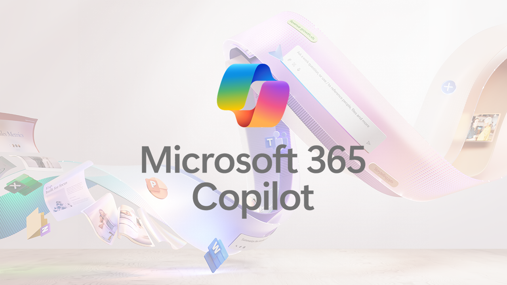

Microsoft 365 Copilot - Wave Two
Satya Nadella
It was just 18 months ago when a Microsoft 365 Copilot was first announced, and it is already transforming work lives and adoption has doubled month over month and adoption is at the fastest rate of any Microsoft 365 Product. Copilot is the UI for AI to break down business processes and help with communication, all the value comes from how you steer and ground these systems. Microsoft 365 Copilot has been evolved in three major ways with Web + Word + Pages where Copilot can turn pages into a multiplayer AI canvas where you can collaborate with other people and Copilot Pages is the first new artifact of the AI age. Copilot always keeps you in your flow with Copilot in PowerPoint, Excel and more plus you can extend with Copilot agents to leverage siloed business applications.
Jared Spataro, Robin Murray & Hadley Griffin
Microsoft have been more deeply engaged with customers when developing Microsoft 365 Copilot and have introduced hundreds of features and improvements and have increase performance and satisfaction with the greatest feedback loop for AI at work including integrating new models such as GPT 4o. Copilot Pages is a dynamic persistent canvas for AI collaboration. You can ask Copilot to do some research on the web, and since Copilot is grounded on the web it can give answers to this and then you can change this response into a page which you can share and even tag in people so they can contribute to help build out the content such as a business case and add content to the page. You can pull information from the web into a page, and this will be available to the free web-based Copilot when signed in with Microsoft Entra Account. Bizchat is where all your data comes together right in the flow of your work, you can pivot from web to work and then refence work information and Copilot can bring this all together and format any information accordingly, which could be to understand what customers are looking for in a business proposal and could even refer to older information as a basis.
Copilot Pages is just the first step where you can iterate with Copilot like a partner, where work happens within Microsoft 365 and bring more features such as to Excel. Businesses run on data and that data lives in different systems and if people want to work with data and for this they use Excel which is the front end for data, for example to understand revenue trends where you can bring together data from various sources such as Dynamics and SAP and then use Copilot to shape and analyse information from the large amounts of information, you could use Copilot to perform calculations including showing how those values were determined and then can do comparisons or output charts and even apply conditional formatting to information. Copilot in Excel can even reason over text such as looking at customer feedback and highlighting customer concerns and can then look for issues that contain that information, quickly analysing disparate information sources that could make a huge difference to a business all right from Excel. There is also Copilot in Excel with Python without needing any programming language where Copilot can write or interpret Python code and can get a workspace where it can show the code to analyse information, and you can iterate on Copilot's work and you can even make edits to the Python code for yourself, if needed. You can use Copilot to get information from an Excel spreadsheet with a preview of the data it will use, you can even generate charts and find out how the chart was generated, to create a detailed summary of data without writing any code.
PowerPoint is where people go to create a story. Copilot in PowerPoint has narrative builder that keeps you in control and with brand manager you can create presentations that are on brand. You can create a presentation for a compelling pitch deck with your own branding and with narrative builder you remain in control and can see the overview of the content of the presentation which you can change or add as needed to get the content outline you want and then generate the presentation which uses your company branding. You can even include company images or AI generated images and can iterate on the presentation, but Copilot can add speaker notes, transitions and more for a presentation that is on brand so you can focus on delivering on your presentation. Copilot in Teams can reason over the meeting transcript and the meeting chat so if you think you have missed any important questions in the chat you can ask for any questions you may have missed or that weren't answered. Copilot in OneDrive helps you work faster and smarter and can answer questions without having to open a file, you may have multiple files where you aren't sure which is the latest so you can ask Copilot to compare them and make sure you are getting the information you need.
Copilot in Word is now a more useful editing partner where you can iterate and build upon work of others without having to reinvent the wheel, Copilot grounds responses in the content and within seconds can execute a plan to create a first draft which normally would take hours to complete and can even reference more information and emails along with any details that would improve the document to get the most relevant and up-to-date information. Copilot in Outlook will transform the way you work with email with prioritise your inbox which analyses your emails including the context of your job to highlight what is most important and order by priority based on Copilot's analysis and Copilot can show why things are more important and you can tell it to prioritise messages from certain people, so Copilot knows to prioritise those. Copilot in Outlook on Mobile can generate responses to emails where you can adjust the tone, and you can tell Copilot what extra information to include until your email is ready to send.
Narrowly focused apps can be broken free with Copilot agents, which automate and work with business processes that can reason, trained to know when to ask for help which can vary in sophistication. They bring the power of agents to you right in the flow of your work and are fully managed by Copilot and easy to create enabling you to scale your team like never before. You can easily create a Copilot agent by using the Copilot builder in Copilot Studio where you can connect it to sources such as SharePoint and edit it as needed include other data sources and can update the name and image to align with your company branding plus agents obey Microsoft 365 security and privacy settings. Today with Copilot agents you can turn every SharePoint site into a Copilot Agent, before information would be hard to find but can add a Copilot that understand the information it was built on and it can even take action along with being able to share them with any colleagues. You can open an agent in Copilot Studio and customise the information it uses and the actions it can take such as a task in Teams where it will confirm what it will do, and you can go ahead.
Web and Work Data come together with Pages for multiplayer data and with Bichat you can get value from data over and over and there are new features in other Microsoft 365 applications along with features such as Copilot Agents and there are more features to come in the next couple of months to Copilot in Microsoft 365. You can read more about the next phase of Microsoft Copilot innovation at news.microsoft.com/m365-copilot-Sept-2024/.